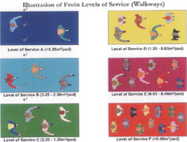
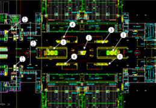

《虹桥综合交通枢纽项目交通分析与咨询》项目顾问 ( 2008年04月03日 )
《虹桥综合交通枢纽项目交通分析与咨询》项目顾问</STRONG>
研究时间：2006年12月—2007年6月</P>
图1 虹桥枢纽本体建筑设计效果图</FONT>
一、项目背景<BR> 鉴于目前世界上还未有同类型规模的巨型综合交通枢纽，虹桥枢纽的规划、设计、建设、管理等各项工作都将面临着前所未有的难度。为了尽早发现设计方案存在的各类问题，合理布设枢纽内部各类设施，经业主认可，枢纽本体航站楼、东交通中心、磁悬浮车站设计单位——华东院委托CB公司对建筑设计进行交通咨询,并同时委托市交通所作为项目顾问，协助CB公司工作、并对CB公司咨询成果协助华东院进行论证分析。<BR>二、顾问内容<BR> 1、协助CB公司收集各类交通预测分析资料，并且就顾问公司自身相关成果与CB公司进行技术交底。<BR> 2、协助业主，对CB公司历次提交的咨询成果、技术方法进行把关，并提交顾问意见。<BR> 3、对CB公司各阶段主要咨询报告进行全面评价，协助业主及CB公司共同推动咨询工作的顺利完成。<BR>三、顾问工作回顾<BR> 1、2007年1月上旬——2007年1月中旬，协助CB公司收集各类交通预测基础资料，并组织CB公司与预测专家进行技术沟通。<BR> 2、2007年1月中旬——2007年2月中旬，对CB公司相关技术方法、预测参数、分析结果进行协调，协助华东院对CB公司历次成果进行把关，推动咨询工作快速发展。<BR> 3、2007年4月上旬——2007年5月下旬，对CB公司提交中期报告进行全面评价，编写顾问评价报告。</P>


图2 人流服务水平评价标准 图3 枢纽-9.3层交通关键点评价
四、顾问意见<BR> 在顾问工作中，市交通所协助CB公司收集了相关预测资料、对CB公司历次提交的咨询成果提交顾问意见，协助了业主及CB公司共同推动咨询工作的顺利完成。总体顾问意见如下：
1、CB公司按照承诺，及时针对业主要求，组织多名英国交通咨询专家重点对相关交通设施设计进行了咨询，提交了相应咨询报告。
2、咨询报告进一步深化了虹桥枢纽交通需求预测，对停放车、车道边以及各类人流设施等设计方案的服务水平进行了较完整分析与评价，并提出了各类设计、组织、管理改善建议。<BR> 3、咨询报告数据指标详尽，对设计方案评价比较客观，相关设计改善建议已引起业主注意，体现了咨询单位作为国际知名交通咨询机构应有的水准。<BR> 4、鉴于虹桥枢纽规划设计工作仍处在整合、完善过程之中，咨询报告中部分预测前提、设计方案，已与目前实际情况不符，对应的设计评价、建议可能都需要相应更新调整。<BR> 5、咨询报告需要进一步文字、图形校正，并且需要对相关计算过程、参数、依据进一步说明。
通过顾问工作，市交通所不仅收集了大量枢纽本体的设计材料，而且就枢纽车道边、停车、人行设施、电梯等本体交通设施评价技术以及设计存在的相关问题与CB公司进行了深入交流，为后续指挥部要求交通所开展的《虹桥综合交通枢纽设计及周边地区规划交通评估》项目打下了坚实的基础。<BR>


地址：上海市静安区铜仁路331号11楼 邮编：200040 Web:site:www.scctpi.sh.cn
电话：（021）62477711 62890464 传真：（021）62472386 62892787
 沪ICP备11003425号-4
沪ICP备11003425号-4